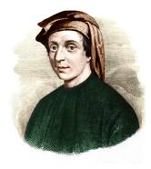

|
Leonardo Fibonacci s-a născut în jurul anului 1170, tatăl lui fiind Guglielmo Fibonacci, un negustor italian înstărit. Guglielmo deținea un post de conducere în cadrul comercial în Bugia, un port la est de Alger, în sultanatul dinastiei Almohad din Africa de Nord în prezent Bejaia, Algeria. În tinerețe, Leonardo obișnuia să călătorească cu tatăl său pentru a-l ajuta și astfel el a învățat limba arabă și despre sistemul numeral hindus-arab. |
 |